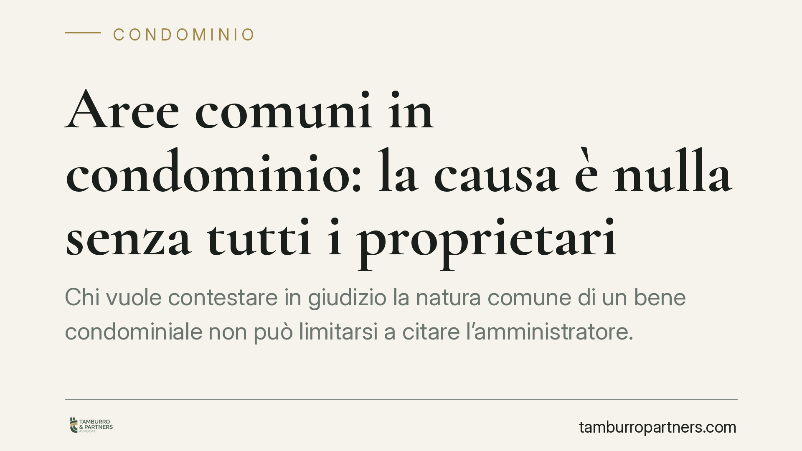

Aree comuni in condominio: la causa è nulla senza tutti i proprietari
Chi vuole contestare in giudizio la natura comune di un bene condominiale non può limitarsi a citare l'amministratore. La Corte di Cassazione ribadisce che vanno chiamati in causa tutti i proprietari: in difetto, il processo è nullo e va rifatto da capo, con costi e tempi che ricadono su chi ha avviato l'azione.

Il caso
La questione ruota attorno a un tema ricorrente nel contenzioso condominiale: chi deve stare in giudizio quando si discute della proprietà di un'area o di un bene comune?
Capita spesso che un condòmino, o un terzo, ritenga di poter contestare la natura condominiale di uno spazio – un cortile, un vano tecnico, un'area di manovra – citando in giudizio soltanto l'amministratore. La Cassazione ha chiarito che questa scorciatoia non regge.
Quando la lite tocca l'esistenza stessa del diritto di proprietà comune, ogni singolo condòmino è titolare di una quota di quel diritto. Escluderne anche uno solo dal processo significa decidere sulla sua proprietà senza averlo sentito. Da qui la sanzione più drastica: la nullità.
Inquadramento normativo
Il punto di partenza è l'art. 1117 del Codice civile, che elenca i beni presuntivamente comuni a tutti i condòmini: suolo, muri maestri, tetti, cortili, scale e simili. La proprietà di questi beni è pro quota di ciascun condòmino, non dell'ente condominio come soggetto astratto.
Proprio per questo, la contestazione della natura comune di un bene dà vita a un litisconsorzio necessario: una situazione in cui la causa non può essere decisa se non partecipano tutti i titolari del diritto. La regola è codificata dall'art. 102 c.p.c., ma trova un aggancio specifico nell'art. 65 delle disposizioni di attuazione del Codice civile, che disciplina la rappresentanza dei condòmini in giudizio.
L'amministratore, ai sensi dell'art. 1131 c.c., rappresenta il condominio per le questioni di gestione e amministrazione. Ma non ha il potere di disporre del diritto di proprietà dei singoli. Quando in gioco c'è la titolarità del bene – non la sua semplice gestione – la sua sola presenza non basta.
La conseguenza processuale è pesante. Se il giudice si accorge in appello che manca un litisconsorte necessario, non può correggere l'errore nel merito: deve rimettere la causa al primo giudice, come previsto dall'art. 354 c.p.c. Il processo, in pratica, riparte da zero.
Implicazioni pratiche
Per chi promuove l'azione, l'errore ha un costo concreto. Anni di giudizio possono essere azzerati per un vizio di impostazione iniziale, con spese processuali sostenute inutilmente e la necessità di ricominciare integrando il contraddittorio.
È una distinzione che va compresa a monte:
- se contesti la gestione di un bene comune (ripartizione spese, manutenzione, uso), l'interlocutore è l'amministratore;
- se contesti la proprietà stessa del bene – sostenendo che sia esclusivo e non comune, o viceversa – devi citare tutti i condòmini.
Sbagliare il perimetro delle parti non è un dettaglio formale: incide sulla validità dell'intero giudizio.
Anche per il condominio convenuto la pronuncia ha un risvolto difensivo. Rilevare da subito il difetto di contraddittorio può bloccare un'azione mal impostata prima che produca effetti.
Cosa fare in concreto
- Qualifica correttamente la domanda. Prima di agire, chiarisci se stai contestando la proprietà del bene o solo la sua gestione: da questo dipende chi devi citare.
- Recupera l'elenco aggiornato dei condòmini. Se la causa riguarda la proprietà, richiedi all'amministratore l'anagrafe condominiale ex art. 1130, n. 6, c.c. per individuare tutti i litisconsorti.
- Verifica le variazioni. Controlla eventuali compravendite, successioni o frazionamenti recenti: un proprietario dimenticato è sufficiente a viziare il giudizio.
- Solleva subito l'eccezione, se sei convenuto. Consigliamo di rilevare il difetto di contraddittorio nella prima difesa utile, per evitare che la causa prosegua su basi instabili.
- Fatti assistere nella fase di impostazione. L'errore più costoso in materia condominiale nasce a monte, nella scelta delle parti da citare.
La lezione è semplice: in materia di proprietà comune, chiamare in causa l'amministratore da solo non protegge chi agisce. Costruire correttamente il contraddittorio fin dall'atto introduttivo è la condizione per non vedere vanificato l'intero giudizio.
---
*Contributo informativo a cura di Tamburro & Partners - Avv. Giuseppe Tamburro. Non costituisce parere legale.*
Ogni condominio ha una storia a sé.
Se gestisci un'amministrazione e vuoi un confronto su una specifica questione condominiale, scrivi allo studio. Ti rispondiamo entro un giorno lavorativo.